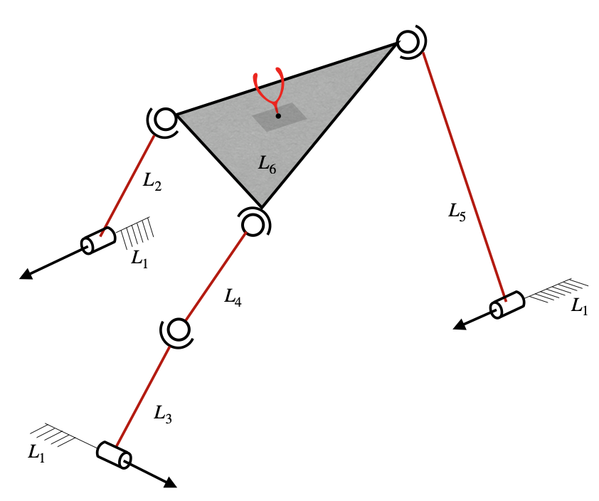

RSSR-SSR Spatial Parallel Robot
Figure
{kind=link}
The RSSR-SSR Serial-Parallel Hybrid Robot is taken from [1], and a picture of the robot is shown in the above figure. The corresponding adjacency matrix is given by
Usage
Jacobian for planar manipulators
The topological information of a robot is to be specified by using its robot-topology matrix, as defined here. For RSSR-SSR spatial parallel manipulator shown above, the robot topology matrix is given by
The corresponding Jacobian function can be formulated as follows.
Firstly, the required functions are imported as shown below.
from acrod.jacobian import Jacobian
from numpy import array
The robot-topology matrix for RSSR-SSR spatial parallel manipulator is defined and jacobian information is processed via the imported jacobian class as follows.
M = array(
[[9, 1, 1, 0, 1, 0],
[1, 9, 0, 0, 0, 4],
[1, 0, 9, 4, 0, 0],
[0, 0, 0, 9, 0, 4],
[0, 0, 0, 0, 9, 4],
[0, 0, 0, 0, 0, 9]]
)
jac = Jacobian(M)
Jacobian function is generated as shown below.
jacobian_function = jac.get_jacobian_function()
In the process of generating the above jacobian function, other
attributes of the jacobian object also are updated. Symbolic Jacobian
matrices can be extracted from the attributes. Since this is a
non-serial robot, there would be four matrices required to compute the
Jacobian, which are \(J_a\), \(J_p\), \(A_a\) and
\(A_p\). These can be extracted by the attributes Ja, Jp,
Aa and Ap, respectively, as shown below.
symbolic_Ja = jac.Ja
symbolic_Jp = jac.Jp
symbolic_Aa = jac.Aa
symbolic_Ap = jac.Ap
In a Jupyter notebook, the symbolic matrices can be visualised as shown below.
symbolic_Ja
Output in Jupyter notebook:
symbolic_Jp
Output in Jupyter notebook:
The above matrices are based on the notations defined and described here.
Active joint velocities, in the corresponding order, can be viewed by running the following lines.
active_joint_velocities = jac.active_joint_velocities_symbolic
active_joint_velocities
In an ipynb file of JupyterLab, the above code would produce the following output.
Robot dimensional parameters can be viewed by running the below line.
robot_dimensional_parameters = jac.parameters_symbolic
robot_dimensional_parameters
In an ipynb file of JupyterLab, the above code would produce the following output.
Robot end-effector parameters can be viewed by running the below line.
robot_endeffector_parameters = jac.endeffector_variables_symbolic
robot_endeffector_parameters
In an ipynb file of JupyterLab, the above code would produce the following output.
Sample computation of Jacobian for the configuration corresponding to the parameters shown below:
End-effector point: \(\textbf{a}=\hat{i}+2\hat{j}+3\hat{k}\)
Locations of joints: \(\textbf{r}_{(1,2)}=2\hat{i}+8\hat{j}+3\hat{k}\), \(\textbf{r}_{(1,3)}=1\hat{i}+2\hat{j}+5\hat{k}\), \(\textbf{r}_{(1,5)}=2\hat{i}+4\hat{j}+7\hat{k}\), \(\textbf{r}_{(2,6)}=3\hat{i}+1\hat{j}+2\hat{k}\), \(\textbf{r}_{(3,4)}=6\hat{i}+8\hat{j}+4\hat{k}\), \(\textbf{r}_{(4,6)}=8\hat{i}+1\hat{j}+3\hat{k}\) and \(\textbf{r}_{(5,6)}=5\hat{i}+7\hat{j}+3\hat{k}\)
Orientations of joints: \(\beta_{(1,2)}=\pi/6\), \(\phi_{(1,2)}=\pi/3\), \(\beta_{(1,3)}=5\pi/6\), \(\phi_{(1,3)}=2\pi/3\), \(\beta_{(1,5)}=\pi/12\) and \(\phi_{(1,5)}=\pi/2\).
For the given set of dimensional parameters of the robot, the numerical
Jacobian can be computed as follows. Firstly, we need to gather the
configuration parameters in Python list format, in a particular order.
The robot dimensional parameters from jac.parameters_symbolic are
found (as shown earlier) to be in the order of \(r_{(1,2)x}\),
\(r_{(1,2)y}\), \(r_{(1,2)z}\), \(\beta_{(1,2)}\),
\(\phi_{(1,2)}\), \(r_{(1,3)x}\), \(r_{(1,3)y}\),
\(r_{(1,3)z}\), \(\beta_{(1,3)}\), \(\phi_{(1,3)}\),
\(r_{(1,5)x}\), \(r_{(1,5)y}\), \(r_{(1,5)z}\),
\(\beta_{(1,5)}\), \(\phi_{(1,5)}\), \(r_{(2,6)x}\),
\(r_{(2,6)y}\), \(r_{(2,6)z}\), \(r_{(3,4)x}\),
\(r_{(3,4)y}\), \(r_{(3,4)z}\), \(r_{(4,6)x}\),
\(r_{(4,6)y}\), \(r_{(4,6)z}\), \(r_{(5,6)x}\),
\(r_{(5,6)y}\) and \(r_{(5,6)z}\). Hence the configuration
parameters are to be supplied in the same order, as a list. Thus, the
computation can be performed as shown below.
from numpy import pi
end_effector_point = [1,2,3]
configuration_parameters = [2, 8, 3, pi/6, pi/3, 1, 2, 5, 5*pi/6, 2*pi/3, 2, 4, 7, pi/12, pi/2, 3, 1, 2, 6, 8, 4, 8, 1, 3, 5, 7, 3]
jacobian_at_the_given_configuration = jacobian_function(end_effector_point, configuration_parameters)
jacobian_at_the_given_configuration
The output produced by running the above code, is shown below.
array([[ 19.62196517, 10.77434097],
[-16.1460825 , -8.61947278],
[ 43.06469529, 30.16815472],
[ 6.57574977, 4.30973639],
[ 19.33597911, 12.92920917],
[ 5.34317907, 2.15486819]])
Accessing each matrix individually:
Each of \(J_a\), \(J_p\), \(A_a\) and \(A_p\) functions can be accessed as shown below
numerical_Ja = jac.Ja_func(end_effector_point, configuration_parameters)
numerical_Ja
Output:
array([[ 5.19615242, 0. ],
[-0.8660254 , 0. ],
[-1.0669873 , 0. ],
[ 0.25 , 0. ],
[ 0.4330127 , 0. ],
[ 0.8660254 , 0. ]])
numerical_Jp = jac.Jp_func(end_effector_point, configuration_parameters)
numerical_Jp
Output:
array([[ 0, 0, 1, -1, 0, 0, 0, 0, 0, 0, 0, 0, 0],
[ 0, -1, 0, -2, 0, 0, 0, 0, 0, 0, 0, 0, 0],
[ 0, 1, 2, 0, 0, 0, 0, 0, 0, 0, 0, 0, 0],
[ 0, 1, 0, 0, 0, 0, 0, 0, 0, 0, 0, 0, 0],
[ 0, 0, 1, 0, 0, 0, 0, 0, 0, 0, 0, 0, 0],
[ 0, 0, 0, 1, 0, 0, 0, 0, 0, 0, 0, 0, 0]])
numerical_Aa = jac.Aa_func(end_effector_point, configuration_parameters)
numerical_Aa
Output:
array([[-5.19615242, 0. ],
[ 0.8660254 , 0. ],
[ 1.0669873 , 0. ],
[-5.19615242, -0.8660254 ],
[ 0.8660254 , -0.5 ],
[ 1.0669873 , -0. ],
[-0.25 , 0. ],
[-0.4330127 , 0. ],
[-0.8660254 , 0. ],
[-0.25 , -0.25 ],
[-0.4330127 , 0.4330127 ],
[-0.8660254 , -0.8660254 ],
[ 0. , 2.66506351]])
numerical_Ap = jac.Ap_func(end_effector_point, configuration_parameters)
numerical_Ap.round()
Output:
array([[ 1., 0., -1., 1., 0., 0., 0., 0., 0., 0., 0., 0., 5.],
[-1., 1., 0., 2., 0., 0., 0., 0., 0., 0., 0., 0., -4.],
[ 0., -1., -2., 0., 0., 0., 0., 0., 0., 0., -5., 4., 0.],
[ 0., 0., -1., 1., 0., -1., 6., 0., 0., -1., 0., 0., 0.],
[ 0., 1., 0., 2., 1., 0., -5., 0., 0., -7., 0., 0., 0.],
[ 0., -1., -2., 0., -6., 5., 0., 1., 7., 0., 0., 0., 0.],
[ 0., -1., 0., 0., 0., 0., 0., 0., 0., 0., 1., 0., 0.],
[ 0., 0., -1., 0., 0., 0., 0., 0., 0., 0., 0., 1., 0.],
[ 1., 0., 0., -1., 0., 0., 0., 0., 0., 0., 0., 0., 1.],
[ 0., -1., 0., 0., 1., 0., 0., 1., 0., 0., 0., 0., 0.],
[ 0., 0., -1., 0., 0., 1., 0., 0., 1., 0., 0., 0., 0.],
[ 0., 0., 0., -1., 0., 0., 1., 0., 0., 1., 0., 0., 0.],
[ 0., 0., 0., 0., -2., 7., 1., 0., 0., 0., 0., 0., 0.]])
And the computation \(J_a-J_pA^{-1}_pA_a\) is given by
import numpy
numerical_Ja-numpy.matmul(numpy.matmul(numerical_Jp,numpy.linalg.inv(numerical_Ap)),numerical_Aa)
which gives the same output as jacobian_at_the_given_configuration.
Some other attributes
To get the computed list of all connecting paths from the base link to the end-effector link, the below script can be used:
jac.P
Output:
[[0, 1, 5], [0, 4, 5], [0, 2, 3, 5]]
which gives the list of all connecting paths (only link numbers are shown, indexed from 0).
Independent paths pertaining to linear and angular velocities:
Out of the above paths, the computed list of independent paths pertaining to linear velocities and angular velocities, can be accessed by the below scripts:
For independent paths pertaining to linear velocities:
jac.P_tilde
Output:
[[0, 1, 5], [0, 4, 5], [0, 2, 3, 5]]
For independent paths pertaining to angular velocities:
jac.P_tilde_omega
Output:
[[0, 1, 5], [0, 4, 5], [0, 2, 3, 5]]
Superfluous DOF information:
This manipulator has a superfluous DOF. The information of all the superfluous DOFs in the manipulator can be retrieved in a list by the script shown below:
superfluous_dof_information = jac.superfluous_dof_information
len(superfluous_dof_information)
Output:
1
The above output shows that the number of superfluous DOF is 1. In order to access the information of this superfluous DOF, the script shown below can be used:
c_be, [(i,j),(k,l)] = superfluous_dof_information[0]
[(i,j),(k,l)]
Output:
[(2, 3), (3, 5)]
The above output shows that the superfluous DOF exists between the
spherical joints joined by links 3,4 and 4,6 (since the link numbers are
indexed from zero). And c_be represents the list of link numbers of
the part that contains base and end-effector links (as explained in the mathematics page).
The complement list of c_be can be computed as shown below.
c_be_complement = [i for i in range(len(M)) if i not in c_be]
c_be_complement
Output:
[3]
This shows that it is the link 4 that exhibits a superfluous DOF, which is evident from the figure in the beginning of this document.
In the above results, the link numbers are indexed from 0 (not 1).
References
[1] Muralidharan V, Bandyopadhyay S (2019) “A two-degree-of-freedom rssr-ssr manipulator for sun-tracking.” In: Badodkar DN, Dwarakanath TA (eds) Machines, Mechanism and Robotics. Springer Singapore, Singapore, pp 135–147